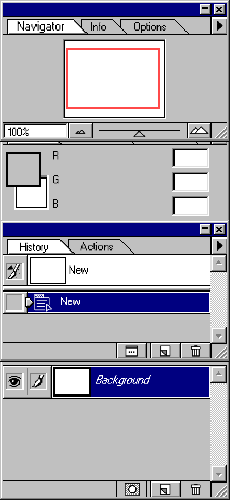
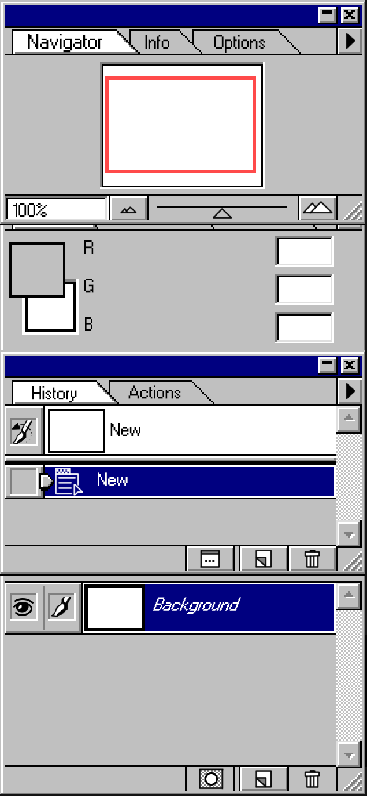

COLORKARMA, LLC, Boston, MA
Video Editor, January 2021 - December 2022
Edited short videos and webinars to insert music, dialogue, and sound effects; arranged shots into sequences; and corrected errors, using editing software such as Adobe Premiere Pro and Adobe Photoshop CC Worked closely with clients and management to realize a coherent creative vision Managed workflow and schedules when working remotely Independently created videos from raw footage, intersplicing music, effects, and photos to effectively form a narrative and illustrate the core concepts present
GREEK WEEK COMMITTEE, Montreal, QC
Graphics Chairman, July - September 2022
VERIZON WIRELESS/TTEC, Montreal, QC
Tech Support/IT, April - July 2020
Provided detailed technical support to customers, covering a wide range of smartphones and other technologies Troubleshot technical issues including network connectivity, file management, data transfer, and Bluetooth technology Researched and resolved customer problems, acting as the customer liaison, conducting call-backs on investigations Worked within a team to transfer and successfully solve all customer needs Processed payments as requested and checked verification requests by third parties Received, de-escalated and documented customer dissatisfaction and complaints within the established standards
ACADEMY OF NATURAL SCIENCES, Philadelphia, PA
Researcher and Programmer, May - August 2019
Coded complex watershed delineation and overland flow algorithms in Google Earth Engine Interpreted, identified, and marked sinkholes, caves, and other depressions using LIDAR data Worked with other researchers in teams on large-scale GIS-based mapping projects Manually identified Karst features and lakes using satellite imagery Read and analyzed scientific papers concerning hydrology, topography, and related geographical research
BLUESTONE EXTERIORS, Philadelphia, PA
Graphic Designer, June - August 2018; September - November 2019
Created graphic designs, collages, and mockup landscape images using Adobe Photoshop CC Composited reference images to actualize a creative vision put forth by a client Based on input, helped corporate clients realize their vision for the final product Surveyed an area and took numerous base photos from which to work Found appropriate additional images on various databases to supplement the designs Edited together multiple photos to create one cohesive, realistic final product Managed and organized large numbers of files, both in and out of digital sharing services
WINDSOR MOUNTAIN INTERNATIONAL, Windsor, NH
Film Editor/Counselor, June 2017 - July 2017
Edited films and videotapes to insert music, dialogue, and sound effects; arranged shots into sequences; and corrected errors, using Final Cut Pro X and other editing software Organized and coordinated scripts on the instructions of directors and producers Taught software skills and creative-based film techniques to campers ranging from ages 7-15 Supervised and coordinated activities of coworkers engaged in film editing, assembling, and recording activities Wrote scripts and outlines for films and assisted others with the same Selected the specific audio/visual effects, music, and most effective shots for each scene to form a logical and smoothly running story
SPIRIT ANIMAL COLLECTIVE, Philadelphia, PA
Film Editor Intern, January 2017
Edited films and videotapes to insert music, dialogue, and sound effects; arranged shots into sequences; and corrected errors, using editing software such as Adobe Premiere Pro and Final Cut Pro X Shot footage for creatvie projects and webinars using DSLR Cameras and external microphones Reviewed footage sequence by sequence to become familiar with it before assembling it into a final product Managedcompany-widedigitalstoragesystemsandharddrivesaswellasorganizingfilesystems Performed data entry and santitization tasks using Excel and SQL Reviewed assembled films or edits of films to determine if corrections were necessary Set up and operated computer editing systems and digital video effects units to produce a final product